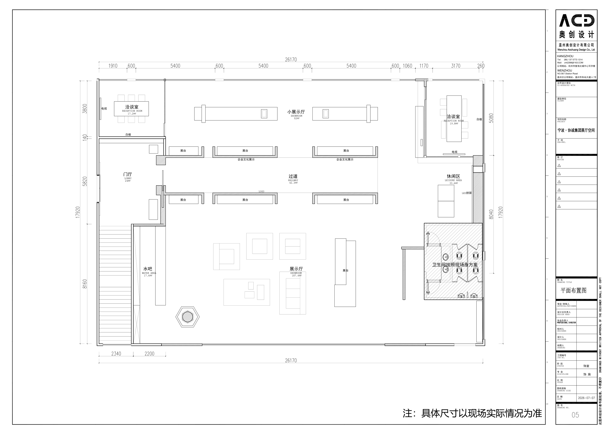
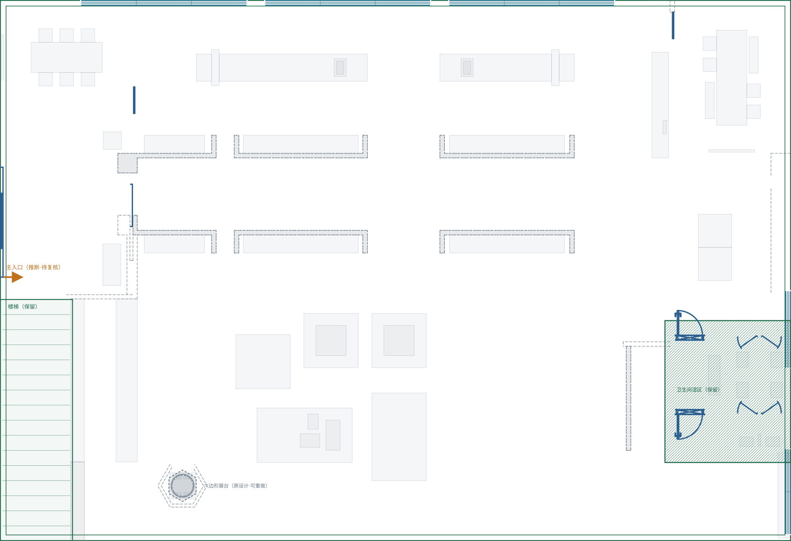
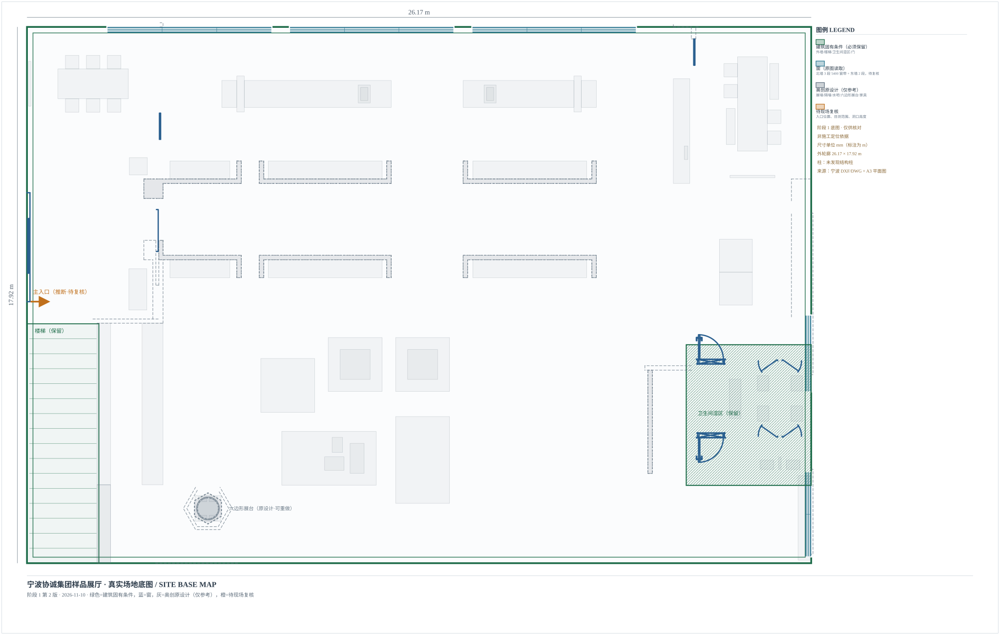

2026-11-10 · 只改标注，不动几何 · 外轮廓 / 门 / 卫生间已由你核对认可


叠加层按原始图外轮廓像素矩形近似配准，可用滑块微调。只用于核对轮廓与元素位置，不作为测量依据。

| 要素 | 状态 | 说明 | 来源 |
|---|---|---|---|
| 展厅外轮廓 / 外墙 | 解析确认 | 26.17 × 17.92 m，与图纸尺寸链 26170 / 17920 一致；外墙按 200 mm 双线绘制 | target_region.bounds + 定位图层锚点 |
| 窗（北墙） | 原图读取·待现场复核 | 3 段 5400 窗带，4 处 600 窗间垛；端部实墙 1910 / 3170 | A3 平面图北墙尺寸链 1910-600-5400-600-5400-600-5400-600-1060-1170-3170-260 |
| 窗（东墙） | 原图读取·待现场复核 | 2 段三线窗符号：距南墙 0.23–3.04 m、5.74–8.27 m | A3 平面图东墙三线（墙-玻璃-墙）画法 |
| 楼梯 | 解析确认 | 西南角 2.4 × 8.0 m，16 级踏步示意 | A3 平面图 + DXF 几何 |
| 卫生间湿区 | 解析确认 | 东南角 4.17 × 4.7 m，斜线填充范围 | A3 平面图斜线填充区域 |
| 门 | 解析确认（洞口配对待复核） | 18 个门候选 | cad-plan-candidates.json architecture.opening.door |
| 柱 | 未发现 | 原「8 个疑似柱」是同一六边形展台内的 1 个圆环 + 4 个 20 mm 圆心标记，不是结构柱 | CIRCLE 候选复核：x 5610–6470 / y 1400–2260 全部落在同一展台范围内 |
| 要素 | 状态 | 说明 | 来源 |
|---|---|---|---|
| 过道两侧 U 形展台墙 | 原设计·可重做 | 沿东西向主通道布置，非承重，可整体拆除重排 | A3 平面图 + DXF 墙体候选（仅作参考层） |
| 两间洽谈室隔墙 | 原设计·可重做 | 西北 19.8㎡ / 东北 5.08 m 进深；可保留改造或取消 | A3 平面图 |
| 水吧 | 原设计·可重做 | 约 1.8 × 3.0 m，位于楼梯东侧 | A3 平面图 |
| 六边形展台 | 原设计·可重做 | 中心 (6.04, 1.83) m，外接圆 R≈0.52 m，内含圆环与圆心标记 | CIRCLE 候选聚类 |
| 家具（固定 + 活动） | 原设计·可重做 | 282 件家具候选，仅作参考，不进入新方案的保留清单 | interior.furniture.fixed / loose |
| 要素 | 状态 | 说明 | 来源 |
|---|---|---|---|
| 主入口位置 | 待现场复核 | 推断在西门厅，宽度与门洞高度未核实 | A3 平面图门厅 + 左侧外墙门候选 |
| 窗台高 / 窗洞高 | 待现场复核 | 平面图无法读出竖向尺寸，立面图未提供 | — |
| 卫生间内部隔断 | 待现场复核 | 仅确认湿区范围，洁具与隔断位置未提取 | A3 平面图斜线区 |
| 133 项拓扑复核 | 待现场复核 | 本轮不清理，保持标记，不影响方案设计 | cad-topology-review.json |
未测试